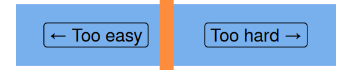

Tidy data in Excel
excel
beginner
Excel for beginners
This session is part of our Excel for beginners course. That’s a series of six linked sessions, delivered on Teams, that give an introduction to Excel for people working in health and social care. The sessions are:
- Excel first steps
- Tidy data in Excel (this session)
- References and names in Excel
- Excel formatting
- Excel tables
- Excel formulas
Together, they aim to help you develop an appropriate set of Excel skills to help your work. This session covers:

- for this session, you’ll need to be familiar with the Excel basics (getting around in Excel, opening/saving/closing files, and a little bit of A1 referencing)
- we’re going to dodge formatting and formulas as much as possible today
- you might find the list of Excel shortcuts helpful too
Previous attendees have said…
- 22 previous attendees have left feedback
- 95% would recommend this session to a colleague
- 100% said that this session was pitched correctly

Three random comments from previous attendees
- Enjoyed this today - learned a few new tips’n’tricks! There’s alwasy somehting you pickup even when you think you know the topic. - ‘Text to columns’ skip column functionality - Data Validation Use Case and Circles - Excel ‘Float’ menu keyboard interaction
- Excellant and very easy to understand especially using the exercises so you can practice whilst in the session. Thank you again Brendan
- Excellent tips to ensure the foundation data structure is correct to ensure you don’t trip up down the line and waste time manually tydying data in order to extract anything meaningful.
Session outline
- a word of warning
- understanding tidy data
- a practical introduction to making tidy data
- text to columns
- transposing
A word of warning
- tidying data can be very slow and complicated
- in Excel, there are lots of advanced tools that can speed things up
- this is a beginner’s session, so we’ll avoid the more fancy tools
- but if your process takes lots of manual work, it’s definitely worth exploring alternative ways of working
Tidy data
| date | service_a | service_b |
|---|---|---|
| 2025-01-01 | 99 | 11 |
| 2025-01-02 | 77 | 33 |
| 2025-01-03 | 55 | 55 |
- one value per cell
- each column contains all the values of one measurement
- each row shows all the values for one date
Entering values
- imagine that we want to measure something across several years:
2018, 2019, 2020, 2021, 2022? - practical:
- open Excel
- start a new workbook
- add a column header
yearin cellA1 - then add each of those five values in the five cells underneath (down to
A6)
More values
we’re going to be using some birthrate data from the NRS for this session. We’ll start by adding some birth rate data
this is given as births per 1,000 women in five year age brackets. We’ll start with 25-29 year old mothers
please add the header
25-29yrsin cellB1here are the values for our five years:
73.4, 71, 66.8, 69.6, 66.7
Another column
| 30-34yrs |
|---|
| 90.9 |
| 88.6 |
| 83.4 |
| 85.9 |
| 84.4 |
- please could you add some new data to your table showing births for another age group
Back to tidy data
- we’ve now got some data with:
- each value in a cell
- each variable in a column
- here, this is a maternal age bracket
- each observation in a row
- here, this is a year
Fixing several values per cell
- We often find useful data with more than one value per cell
- this can be helpful for humans

- Excel can’t do anything with this data
Exercise: many values per cell
| 35-39 |
|---|
| 54.2 (21%) |
| 52.7 (20%) |
| 49.4 (19%) |
| 52.8 (20%) |
| 52 (20%) |
- please add this column of data to your table
- does it look similar to your existing data?
What’s the solution?
- make this data have one value per cell
- we could remove all the percentages by hand
-
Text to Columnsgives us a better tool for the job
Text to Columns
- select a column
- in the
Datatab of the ribbon, you should find theText to Columnstool
- note that you can keep, or remove, the percentage column. We’ll skip it, to keep things simple

Exercise: transposed data
| Bracket | 2018 | 2019 | 2020 | 2021 | 2022 |
|---|---|---|---|---|---|
| 25-29yrs | 73.4 | 71.0 | 66.8 | 69.6 | 66.7 |
| 30-34yrs | 90.9 | 88.6 | 83.4 | 85.9 | 84.4 |
| 35-39yrs | 54.2 | 52.7 | 49.4 | 52.8 | 52.0 |
- sometimes you’ll find data where the columns and rows have been flipped
- that’s slow to fix by hand, but luckily you can transpose it, which swaps rows and columns
- select your data, and copy/paste into a new cell
- then use the transpose option